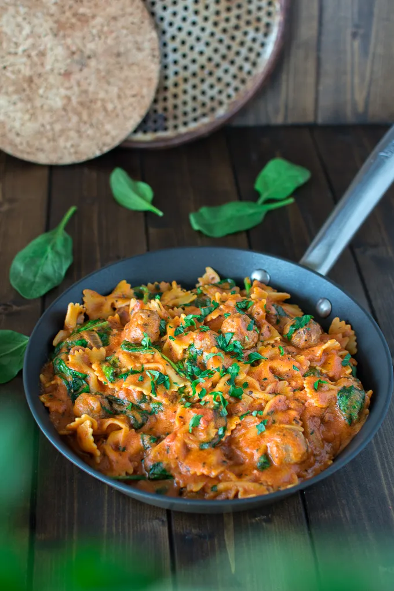

Michelle's Pasta

My favorite pasta recipe
This is a recipe intended for 2 that my girlfriend
Michelle first often makes. It utilizes relatively
simple yet reliable ingredients that anyone can use.
Ingredients
- 9 oz. of Italian Pork Sausage Mild
- 2 cloves of garlic
- 6 oz. of Cavatappi pasta
- 1.5 oz tomato paste
- 4 oz alfredo sauce
- ¼ cup parmesan cheese
- 2 tbsp butter
- Oregano
- Garlic powder
- Onion powder
- Red pepper flakes
Directions
- Preheat oven to 400 degrees. Bring a large pot of salted water to a boil.
- Remove garlic cloves from the garlic bulb, place into a small piece of aluminum foil. Drizzle the garlic with olive oil; season with salt and pepper.
Cinch into a packet and place on baking sheet. Roast until garlic is softened. 20-25 minutes.
- Cook pasta. Once water is boiling, add pasta to pot. Cook until al dente, 9-11 minutes. Reserve 1 cup of pasta cooking water (2 cups for 4-person serving),
then drain.
- Make sauce. While pasta cooks, heat a drizzle of olive oil in a large pan over medium-high heat. Add sausage and cook, breaking up meat into pieces, until browned
and cooked through, 4-6 minutes.
- Transfer roasted garlic to a plate. Mash the garlic with a fork. Return pan with sauce to low heat; stir in garlic. Pour in alfredo sauce. Stir in pasta, parmesan cheese, and butter.
- Enjoy!